rm(list = ls())
library(tidyverse)
library(lubridate)
library(forcats)
library(dplyr)
library(igraph)
library(CGPfunctions)
library(patchwork)
library(mapSpain)
library(glue)Group Task
Required packages
Insert in the lower chunk the packages you will need
Data
The practice will be based on the electoral data archives that we have already worked on, compiling data on elections to the Spanish Congress of Deputies from 2008 to the present.
election_data <- read_csv(file = "datos_elecciones_brutos.csv")
cod_mun <- read_csv(file = "cod_mun.csv")
surveys <- read_csv(file = "historical_surveys.csv")
abbrev <- read_csv(file = "siglas.csv")The data will be as follows:
poll_data: file with election data for Congress from 2018 to the last ones in 2019.cod_mun: file with the codes and names of each municipalityabbrev: acronyms and names associated with each partysurveys: table of electoral polls since 1982. Some of the variables are the following:
You must obligatorily answer the following questions (plus those that you consider analyzing to distinguish yourself from the rest of the teams, either numerically and/or graphically)
- How is the vote of national parties (PSOE, PP, VOX, CS, MP, UP - IU) distributed against regional or nationalist parties?
- Which party was the winner in the municipalities with more than 100,000 habitants (census) in each of the elections?
- Which party was the second when the first was the PSOE? And when the first was the PP?
- Who benefits from low turnout?
- How to analyze the relationship between census and vote? Is it true that certain parties win in rural areas?
- How to calibrate the error of the polls (remember that the polls are voting intentions at national level)?
- In which election were the polls most wrong?
- How were the polls wrong in national parties (PSOE, PP, VOX, CS, MP, UP - IU)?
- Which polling houses got it right the most and which ones deviated the most from the results?
Data cleaning
First, we clean data according to the principles of tidy data. These data frames are the basis for our subsequent operations.
Election data
election_data_clean <- election_data |>
pivot_longer(cols ="BERDEAK-LOS VERDES":"COALICIÓN POR MELILLA", #Pivoting to make tidy data
names_to = "party",
values_to = "votes")
election_data_clean<-election_data_clean|>
mutate(date_elec = make_date(anno, mes)) |>
select(-tipo_eleccion, -codigo_distrito_electoral) |>
mutate(votes = ifelse(is.na(votes), 0, votes)) #changing all NA values to 0, as we expect that the data set misinterprets 0s as NAAbbrev data
distinct_parties <- election_data_clean |>
distinct(party)
# Combine datasets as there are parties in election_data not present in
abbrev_test <- abbrev |>
full_join(distinct_parties, by = c("denominacion" = "party"))
#abbrev_test <- abbrev |>
#full_join(distinct_parties, by = c("denominacion" = "party")) |>
#filter(is.na(siglas))
#Creating a new column with the collected parties
abbrev_collect<-abbrev_test |>
mutate(party_collect = case_when(
str_detect(siglas, "PSOE") |
str_detect(siglas, "P.S.O.E") |
str_detect(siglas, "psoe") |
str_detect(denominacion, "PARTIDO SOCIALISTA") |
str_detect(denominacion, "PSOE") |
str_detect(denominacion, "P.S.O.E.") ~ "PSOE", # PARTIDO SOCIALISTA OBRERO ESPAÑOL
str_detect(denominacion, "CONVERGENCIA I UNIO") ~ "CU", # CONVERGÈNCIA I UNIÓ
str_detect(siglas, "PP") |
str_detect(denominacion, "PARTIDO POPULAR") ~ "PP", # PARTIDO POPULAR
str_detect(denominacion, "CIUDADANOS-") ~ "CS", #CIUDADANOS
str_detect(denominacion, "UNIDAS")|
str_detect(siglas, "PODEMOS")|
str_detect(denominacion, "VERDES")|
str_detect(denominacion, "PODEM")|
str_detect(denominacion, "EZKER") |
str_detect(siglas, "IU")~ "UP_IU", #UNIDAS PODEMOS - IU
str_detect(denominacion, "BILDU")|
str_detect(siglas, "EH")|
str_detect(denominacion, "SORTU")|
str_detect(denominacion, "ALKARTASUNA")|
str_detect(denominacion, "ARALAR") |
str_detect(denominacion, "ALTERNATIBA") ~ "EH_BILDU", # EH - BILDU
str_detect(denominacion, "VASCO") ~ "PNV", # PARTIDO NACIONALISTA VASCO
str_detect(siglas, "BNG") |
str_detect(denominacion, "GALLEG") |
str_detect(denominacion, "GALICIA") |
str_detect(denominacion, "GALEGUISTA")|
str_detect(denominacion, "GALEG") |
str_detect(denominacion, "GALIZ") ~ "BNG", # BLOQUE NACIONALISTA GALLEGO
str_detect(siglas, "VOX") ~ "VOX", # VOX
str_detect(siglas, "PAÍS") ~ "MP", # MÁS PAÍS
str_detect(siglas, "COMPROMÍS") ~ "CP", # COMPROMÍS
str_detect(siglas, "ERC") |
str_detect(denominacion, "CATALUNYA SÍ") ~ "ERC", # ESQUERRA REPUBLICANA DE CATALUNYA
TRUE ~ "OTHER"))|>
distinct(denominacion, .keep_all = TRUE)Survey data
survey_clean <- surveys |>
filter(year(date_elec) >= 2018) |> #Filtering only years >2018
filter(exit_poll == FALSE) |> # Only keeping non exit polls
filter(size >750| size != NA) |> #Only keeping cases with a size ,larger than 750 or are bot NA
mutate(field_days = field_date_to - field_date_from) |> #New column to count the number of field days
relocate(field_days, .after = field_date_to) |> #Relocating the field_days column
filter(field_days>0) |> #Filtering cases with field days >0
pivot_longer(cols ="UCD":"EV", #Pivoting to make tidy data
names_to = "party",
values_to = "vote_int") |>
mutate(vote_int = ifelse(is.na(vote_int), 0, vote_int))Joining tables
Now, we join tables. The abbreviations are joined to the election data and the survey data so we have the party denomination, as coded in the abbreviations table for the election and survey data.
Joining abbrev_collect and election data
election_data_clean <- election_data_clean |>
left_join(abbrev_collect, by = c("party" = "denominacion"))Joining abbrev_collect and survey
#Joining the abbrev_collect table with the survey table and adding the abbreviations that are not in the abbrev table to the column: party_collect
survey_clean_collect<-survey_clean |>
left_join(abbrev_collect, by = c("party" = "siglas")) |>
mutate(party_collect =
case_when(party_collect == "PSOE" ~ "PSOE",
party_collect == "CS" ~ "CS",
party_collect == "UP_IU" ~ "UP_IU",
party_collect == "EH_BILDU" ~ "EH_BILDU",
party_collect == "PP" ~ "PP",
party_collect == "PNV" ~"PNV",
party_collect == "BNG" ~ "BNG",
party_collect == "VOX" ~ "VOX",
party_collect == "MP" ~ "MP",
party_collect == "CP" ~ "CP",
party_collect == "ERC" ~ "ERC",
party_collect == "CU" ~ "CU",
TRUE ~ party)) |>
select(-party)
#Reducing the data set by taking out unsuseful variables
survey_clean_collect_red <- survey_clean_collect |>
select(-field_date_from, -field_date_to, -exit_poll) |>
drop_na(vote_int)
# removing siglas not to confuse with party_collect
abbrev_collect<- abbrev_collect |>
select(-siglas)Questions
Q1 How is the vote of national parties (PSOE, PP, VOX, CS, MP, UP - IU) distributed against regional or nationalist parties?
national_parties <- c("PSOE", "PP", "VOX", "CS", "MP", "UP_IU")
regional_nationalist_parties <- c("OTHER", "ERC", "CP", "BNG", "CU", "PNV", "EH_BILDU" )
#data set I need for my question
election_data_clean_1 <- election_data_clean |>
select(-(anno:votos_candidaturas))
#slicing the sample to make the code and then will run it when its all done
#election_data_sample <- election_data_clean_1 |>
#slice_sample(prop =0.10)
election_data_q1 <- election_data_clean_1 |>
group_by(date_elec, party_collect) |>
mutate(party_type =
case_when(party_collect %in% c("PSOE", "PP", "VOX", "CS", "MP", "UP_IU") ~ "national",
TRUE ~ "regional/nationalist")) |>
mutate(sum_votes = sum(votes)) |>
ungroup()
#Summing the total votes per party per election
election_data_q1 <- election_data_q1 |>
group_by(date_elec, party_type) |>
mutate(votes_elec_party = sum(votes)) |>
ungroup()
#Summing the total votes voted per election
election_data_q1 <- election_data_q1 |>
group_by(date_elec) |>
mutate(votes_elec_total = sum(votes)) |>
ungroup()
#Computing a percentage of how many votes a party received compared to the total votes voted
election_data_q1 <- election_data_q1 |>
mutate(votes_elec_party_perc = (votes_elec_party/votes_elec_total)*100)
#creating new dataset to visualize the relationship between the share of national parties and regional/ nationalist parties
graph_data <- election_data_q1 |>
group_by(date_elec) |>
distinct(party_type, votes_elec_party_perc) Creating the plot.
ggplot(data = graph_data, aes(x = date_elec, y = votes_elec_party_perc, color = party_type, group = party_type)) +
geom_line() +
geom_text(aes(label = sprintf("%.1f%%", votes_elec_party_perc)), vjust = -0.5, hjust = 0.5, size = 3, color = "black") +
labs(title = "Vote Share of National and Regional Parties\nin Elections between 2008 and 2019",
y = "",
x = "Date of Election") +
scale_y_continuous(breaks = seq(0, 100, by = 10))+
scale_x_date(date_breaks = "1 year", date_labels = "%Y")+
theme_classic() +
theme(legend.position = "none")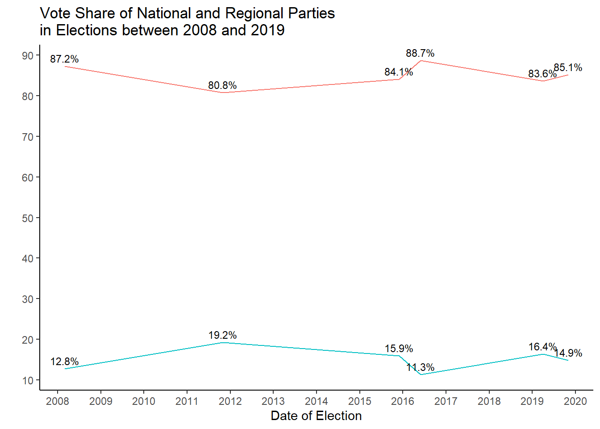
The plot at the end shows the relationship of the share going to each group of parties. We see that in 2016 the share of votes going to national parties increased, while the opposite happened to regional and nationalist parties. Regional and nationalist parties recorded their highest share in the 2011 election.
Q2 Which party was the winner in the municipalities with more than 100,000 habitants (census) in each of the elections?
election_data_clean_2 <-election_data_clean |>
select(-(anno:vuelta)) |>
mutate(codigo_ccaa_pro_muni = paste(codigo_ccaa, codigo_provincia, codigo_municipio, sep = "-")) |> #code to track each by municipality
mutate(total_votes_municipality = votos_blancos+ votos_nulos + votos_candidaturas) |> #total votes casted in each municipality for every row
group_by(date_elec, codigo_ccaa_pro_muni) |>
mutate(votes_perc_party_municipality = (votes/total_votes_municipality)*100) |> #percentage of votes that a party got from the total amount of votes cast in each municipality
ungroup()
q2_final_result <- election_data_clean_2 |>
filter(censo > 100000) |>
group_by(date_elec, codigo_ccaa_pro_muni) |>
arrange(desc(votes_perc_party_municipality)) |>
slice(1) |>
ungroup() ggplot(q2_final_result,
aes(x =party_collect))+
geom_bar(stat = "count", fill = "black") +
geom_text(stat = "count", aes(label = after_stat(count)), vjust = -0.5, size = 3) +
labs(title = "Election Winners in Municipalities with more than 100,000 inhabitants in each election",
x = "Party",
y = "Count") +
guides(fill = guide_legend(title = "Party")) +
theme_classic() +
facet_wrap(~date_elec, scales = "free_x")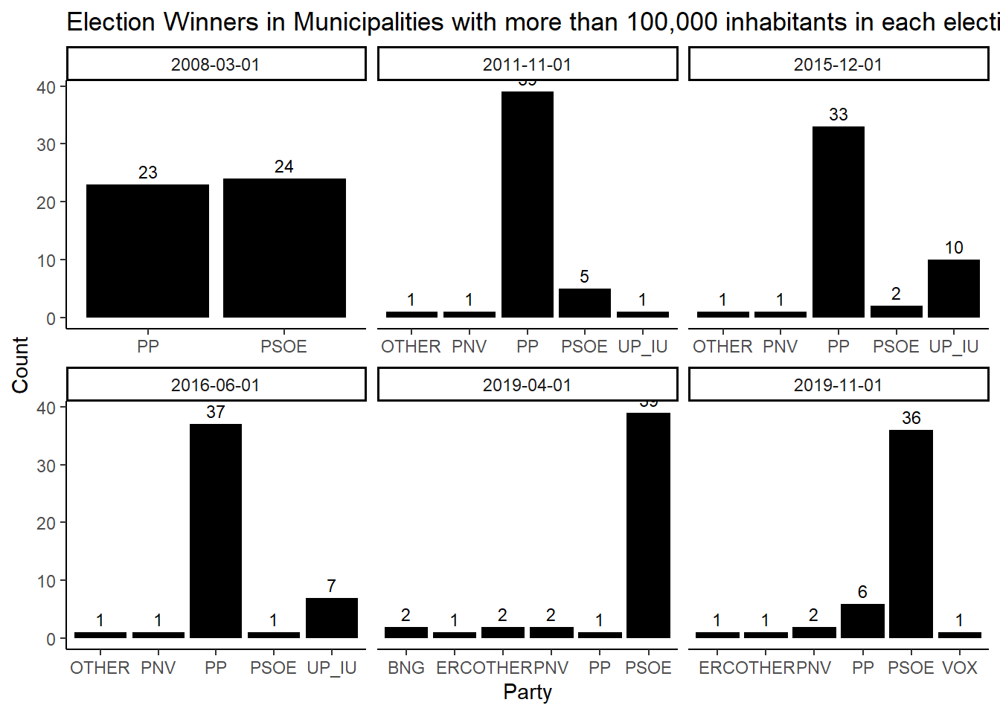
Interestingly, in election where the PP won, it also won the most populous municipalities after the party system shifted away from the traditional two-party system.
Q3 Which party was the second when the first was the PSOE? And when the first was the PP?
election_data_q3 <- election_data_clean_2 |>
left_join(cod_mun, by = c("codigo_ccaa_pro_muni" = "cod_mun")) |>
filter(censo > 100000) |>
select(date_elec, party, party_collect, codigo_ccaa_pro_muni, municipio, votes_perc_party_municipality) |>
group_by(date_elec, codigo_ccaa_pro_muni) |>
arrange(desc(votes_perc_party_municipality)) |>
mutate(rank = row_number()) |>
ungroup()
# Identify dates and municipalities where PSOE won
psoe_wins <- election_data_q3 |>
filter(party_collect == "PSOE", rank == 1) |>
select(date_elec, codigo_ccaa_pro_muni)
# Filter for municipalities where PSOE won and find the parties coming in second place
parties_2nd_place_after_PSOE <- election_data_q3 |>
semi_join(psoe_wins, by = c("date_elec", "codigo_ccaa_pro_muni")) |>
filter(rank == 2) |>
select(date_elec, municipio, party, party_collect)
# Identify dates and municipalities where PP won
PP_wins <- election_data_q3 |>
filter(party_collect == "PP", rank == 1) |>
select(date_elec, codigo_ccaa_pro_muni)
# Filter for municipalities where PP won and find the parties coming in second place
parties_2nd_place_after_PP <- election_data_q3 |>
semi_join(PP_wins, by = c("date_elec", "codigo_ccaa_pro_muni")) |>
filter(rank == 2) |>
select(date_elec, municipio, party, party_collect) This barplot illustrates the second place finisher for municipalities where the PSOE won.
ggplot(parties_2nd_place_after_PSOE,
aes(x =party_collect))+
geom_bar(stat = "count", fill = "black") +
geom_text(stat = "count", aes(label = after_stat(count)), vjust = -0.5, size = 3) +
labs(title = "Second placed parties if PSOE wins a municipality",
x = "Party",
y = "Count") +
guides(fill = guide_legend(title = "Party")) +
theme_classic()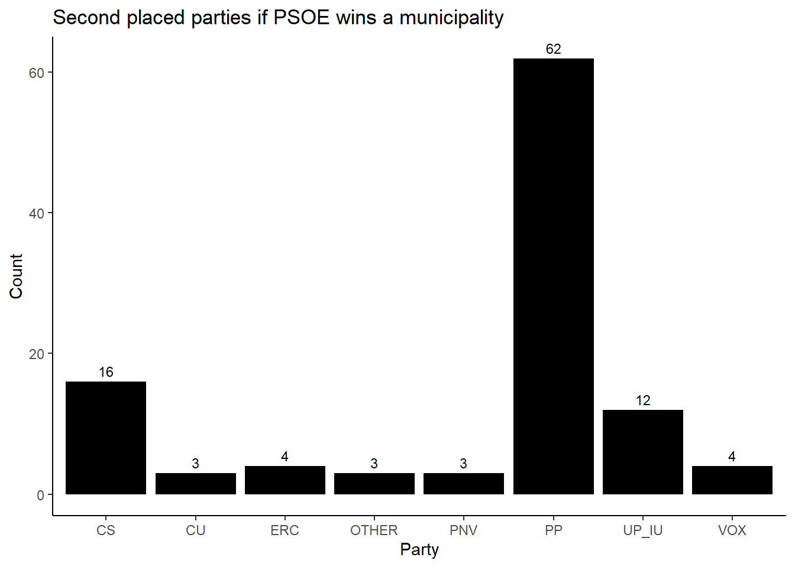
This barplot illustrates the second place finisher for municipalities where the PP won.
ggplot(parties_2nd_place_after_PP,
aes(x =party_collect))+
geom_bar(stat = "count", fill = "black") +
geom_text(stat = "count", aes(label = after_stat(count)), vjust = -0.5, size = 3) +
labs(title = "Second placed parties if PP wins a municipality",
x = "Party",
y = "Count") +
guides(fill = guide_legend(title = "Party")) +
theme_classic()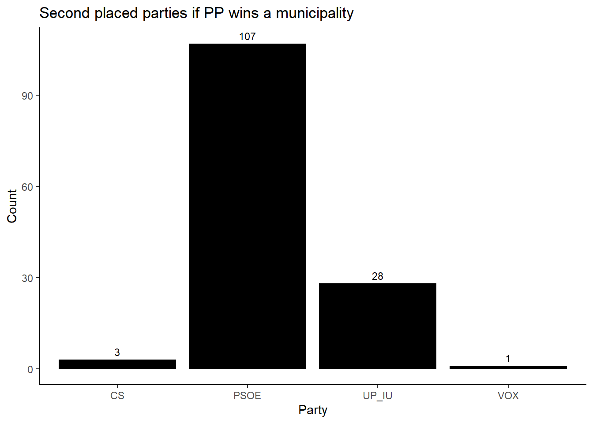
We now only read out the party that has come in second the most often when the PSOE has won using the glue package.
second_place_party_PSOE <-
parties_2nd_place_after_PSOE |>
count(party_collect, name = "Party_Count") |>
filter(Party_Count == max(Party_Count)) |>
pull(party_collect)
PSOE <- glue("The party that has come in 2nd most often when the PSOE has won a municipality is {second_place_party_PSOE}.")
# Print the outcome
print(PSOE)The party that has come in 2nd most often when the PSOE has won a municipality is PP.second_place_party_PP <-
parties_2nd_place_after_PP |>
count(party_collect, name = "Party_Count") |>
filter(Party_Count == max(Party_Count)) |>
pull(party_collect)
PP <- glue("The party that has come in 2nd most often when the PP has won a municipality is {second_place_party_PP}.")
# Print the outcome
print(PP)The party that has come in 2nd most often when the PP has won a municipality is PSOE.Q4 Who benefits from low turnout?
#Create turnout column
election_data_turnout <- election_data_clean |>
mutate(municipio_id = paste(codigo_provincia, codigo_municipio, sep = "-")) |>
group_by(municipio_id, date_elec) |>
mutate(
turnout_pcg = round((((votos_candidaturas+votos_nulos+votos_blancos)/censo)*100), digits = 2)) |>
ungroup() |>
group_by(municipio_id) |>
mutate(vote_share = (votes / (votos_candidaturas + votos_blancos))*100) |>
ungroup() #Low turnout dataset
low_turnout_winners <- election_data_turnout |>
filter(turnout_pcg < 60) |>
dplyr::slice_max(n = 1, vote_share, by = c(municipio_id)) |>
select(vote_share, party, party_collect)
ggplot(low_turnout_winners, aes(x = party_collect)) +
geom_bar(stat = "count") +
geom_text(stat = "count", aes(label = after_stat(count)), vjust = -0.5, size = 3) +
labs(title = "Number of Municipalities Won by Party in Low Turnout Elections",
caption = "Low turnout defined as any election with a turnout less than 60% ",
x = "Party",
y = "") +
scale_y_continuous(breaks = seq(0, 55000, by = 10000)) +
theme_classic()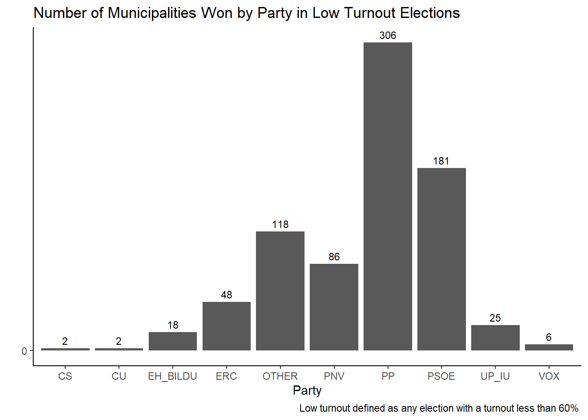
Historically, since 2008, in low turnout elections, smaller parties have had a higher chance of winning the election. Nonetheless, the PP dominates these low turnout elections, with the PSOE considerably lagging behind. This can be attributed to the more consistent electorate of the conservative PP casting votes more reliable.
Q5 How to analyze the relationship between census and vote? Is it true that certain parties win in rural areas?
#Subset with rural municipalities and their winners
election_winners_rural<- election_data_clean |>
filter(censo < 30000, votes > 0) |>
mutate(municipio_id = paste(codigo_provincia, codigo_municipio, sep = "-")) |>
group_by(date_elec, municipio_id) |>
mutate(vote_share = (votes / (votos_candidaturas + votos_blancos))*100) |>
ungroup() |>
dplyr::slice_max(n = 1, vote_share, by = c(municipio_id)) |>
select(vote_share, party, party_collect)
#Plot the count of each party winning rural areas
ggplot(election_winners_rural, aes(x = party_collect)) +
geom_bar(stat = "count") +
geom_text(stat = "count", aes(label = after_stat(count)), vjust = -0.5, size = 3) +
labs(title = "Winning Parties in Rural Areas",
caption = "Rural area defined as municipality with less than 30,000 inhabitants",
x = "Party",
y = "Count")+
theme_classic()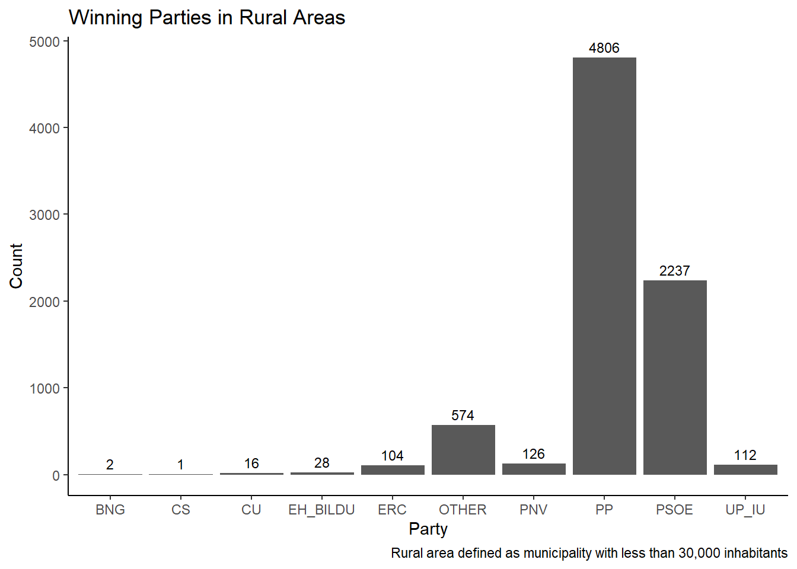
As may be expected, the PP is most successful in elections in rural areas.
Q6 How to calibrate the error of the polls (remember that the polls are voting intentions at national level)?
Creating an ID in both the survey data table and the election data table to match the two.
survey_clean_collect_red <- survey_clean_collect_red |>
mutate(id_join = paste(substr(date_elec, 1, 7), party_collect, sep = "-"))
election_data_clean <- election_data_clean |>
mutate(id_join = paste(substr(date_elec, 1, 7), party_collect, sep = "-")) Following, the average difference between percentage of votes gained and voting intentions per election is calculated. For that the survey data set and election data set are merged.
election_data_clean_red <- election_data_clean |>
select(-anno, -mes, -vuelta,-participacion_1, -participacion_2, -votos_candidaturas) |>
mutate(codigo_ccaa_pro_muni = paste(codigo_ccaa, codigo_provincia, codigo_municipio, sep = "-")) |>
filter(year(date_elec) >= 2018)
#Summing the total votes per party per election
election_data_clean_red<-election_data_clean_red |>
group_by(date_elec, party_collect) |>
mutate(votes_elec_party = sum(votes)) |>
ungroup()
#Summing the total votes voted per election
election_data_clean_red<-election_data_clean_red |>
group_by(codigo_ccaa_pro_muni, date_elec) |>
mutate(votes_total_blancos_nulos = votos_blancos + votos_nulos) |>
ungroup() |>
group_by(date_elec) |>
mutate(votes_total_blancos_nulos = sum (votes_total_blancos_nulos)) |>
mutate(votes_elec = sum(votes)) |>
ungroup() |>
mutate(votes_elec_total = votes_total_blancos_nulos + votes_elec)
#Computing a percentage of how many votes a party received compared to the total votes voted
election_data_clean_red<-election_data_clean_red |>
mutate(votes_elec_party_perc = (votes_elec_party/votes_elec_total)*100)
election_data_clean_red_7 <- election_data_clean_red |>
select(id_join, votes_elec_total, codigo_ccaa, date_elec, votes_elec_party_perc, party_collect) |>
distinct(id_join, date_elec, .keep_all = TRUE)
survey_clean_collect_red_7 <- survey_clean_collect_red |>
select(id_join, vote_int, id_pollster)
# Joining survey_clean with election_data_clean using the id_join from both tables
survey_elec <- election_data_clean_red_7 |>
left_join(survey_clean_collect_red_7, by = c("id_join" = "id_join"), relationship = "many-to-many")
#subtracting the voting intentions (in percentage) of the percenatage of votes gained per per party per election.
#As the difference can be both positive and negative, the differences in votes are squared to account for the negatives
survey_elec<-survey_elec |>
mutate(diff_vote_int = votes_elec_party_perc - vote_int) |>
mutate(diff_vote_int_2 =diff_vote_int^2)
#Creating the average difference between percentage of votes gained and voting intentions per election
#Taking the squareroot to return the variable in to the orginal units
survey_elec<-survey_elec |>
group_by(date_elec) |>
mutate(avg_diff_vote_int = sqrt(mean(diff_vote_int_2, na.rm = TRUE))) |>
ungroup()Q7 In which election were the polls most wrong?
Using the previously calculated difference between votes gained and intentions to vote, a distinct function is applied
#Checking in which election the polls were most wrong
survey_elec_result<- survey_elec |>
distinct(avg_diff_vote_int, date_elec)
survey_elec_result# A tibble: 2 × 2
avg_diff_vote_int date_elec
<dbl> <date>
1 9.10 2019-04-01
2 8.88 2019-11-01survey_elec_result<- survey_elec_result |>
mutate(date_elec_factor = as.character(date_elec))
ggplot(survey_elec_result, aes(x = date_elec_factor, y = avg_diff_vote_int)) +
geom_col() +
labs(title = "Error in election polls per election",
x = "Election",
y = "Average Difference votes and votes intentions") +
theme_minimal()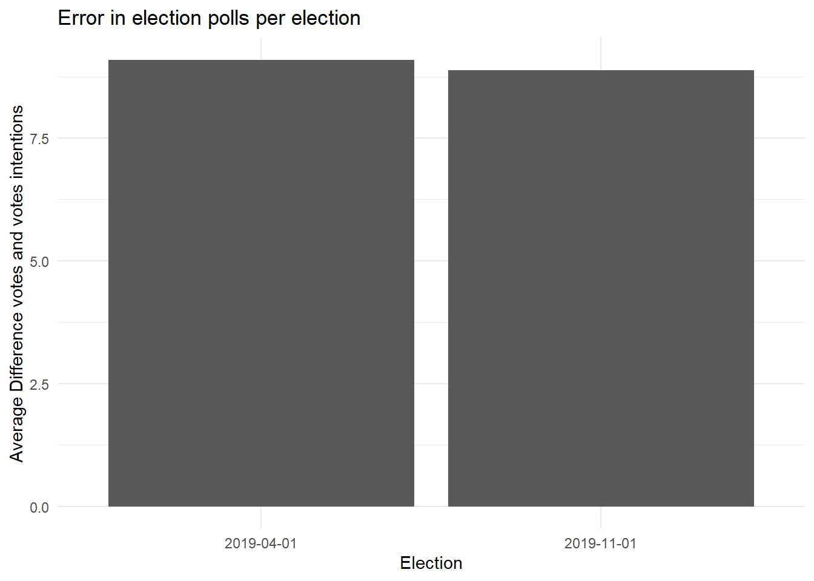
The polls of the election in April 2019 were slightly more mistaken than in the November election.
Q8 How were the polls wrong in national parties (PSOE, PP, VOX, CS, MP, UP - IU)?
#Computing the average polling error per party per election
survey_elec_national<-survey_elec |>
filter(party_collect == "PSOE"|party_collect == "PP"|party_collect =="VOX"|party_collect =="CS "|party_collect =="MP"|party_collect =="UP_IU") |>
group_by(date_elec, party_collect) |>
mutate(avg_diff_poll = sqrt(mean(diff_vote_int_2, na.rm = TRUE)) ) |>
ungroup()
#Obtaining the results
survey_elec_national<-survey_elec_national |>
distinct(avg_diff_poll, date_elec, party_collect) |>
arrange(date_elec)
survey_elec_national<-survey_elec_national |>
mutate(date_elec_factor = as.character(date_elec))ggplot(survey_elec_national, aes(x = party_collect, y = avg_diff_poll, fill = date_elec_factor)) +
geom_col(position = "dodge") +
labs(title = "Error in election polls per party",
x = "Party",
y = "Average Difference votes and votes intentions",
fill = "Election") +
theme_minimal()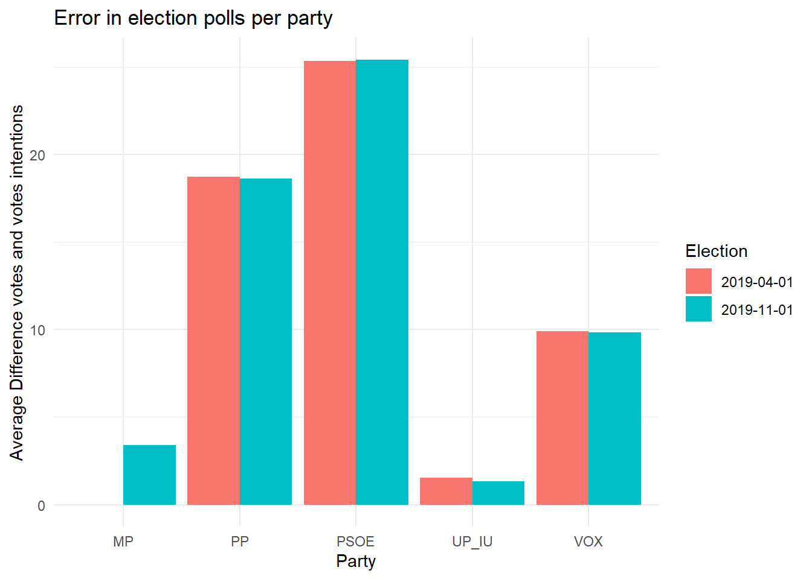
The polling error are largest in both elections for the party PSOE and smallest for the party UP_IU. The polling errors per party are highly similar for both elections.
Q9 Which polling houses got it right the most and which ones deviated the most from the results?
#Computing the average polling error per polling house per election and obtaining the minimum and maxium polling with their corresonding pollhouses per election
survey_elec<-survey_elec |>
group_by(id_pollster, date_elec) |>
mutate(avg_diff_pollhouse = sqrt(mean(diff_vote_int_2, na.rm = TRUE))) |>
ungroup() |>
drop_na(avg_diff_pollhouse)
#Obtaining the result for the maximum polling error
result_max<-survey_elec|>
group_by(date_elec) |>
filter(avg_diff_pollhouse == max(avg_diff_pollhouse)) |>
distinct(avg_diff_pollhouse, id_pollster, date_elec)
result_max# A tibble: 2 × 3
# Groups: date_elec [2]
avg_diff_pollhouse id_pollster date_elec
<dbl> <chr> <date>
1 9.74 pollster-49 2019-04-01
2 10.0 pollster-76 2019-11-01#Obtaining the result for the maximum polling error
result_min<-survey_elec|>
group_by(date_elec) |>
filter(avg_diff_pollhouse == min(avg_diff_pollhouse)) |>
distinct(avg_diff_pollhouse, id_pollster, date_elec)
result_min# A tibble: 2 × 3
# Groups: date_elec [2]
avg_diff_pollhouse id_pollster date_elec
<dbl> <chr> <date>
1 8.72 pollster-56 2019-04-01
2 8.42 pollster-49 2019-11-01The polling houses in the results_max table are the polling houses with the minimum polling error for the elections of April and November and the results_min table, the polling houses with the smallest error for these two elections.
Additional insights
How did the voter turnout change in the two elections in 2019?
Following, a graph will display the change in voter turnout across the two elections with a so-called lollipop graph. Differences are calculated and plotted per community and across the whole of Spain.
The subsequent chunk creates a joint data for the two elections in 2019 of voter turnout in the communities and the whole of Spain.
# Voter turnout regions
election_data_clean_lollipop <-
election_data_clean |>
filter(date_elec >= "2019-04-01") |>
mutate(votes_casted = votos_candidaturas + votos_blancos + votos_nulos) |>
select(-votos_blancos, -votos_candidaturas, -votos_nulos) |>
mutate(municipio_id = paste(codigo_provincia, codigo_municipio, sep = "-")) |>
distinct(municipio_id, mes, .keep_all = T) |>
select(municipio_id, codigo_ccaa, votes_casted, censo, mes) |>
group_by(codigo_ccaa, mes) |>
summarise(votes_sum = sum(votes_casted),
population_sum = sum(censo) ) |>
ungroup() |>
mutate(voter_turnout = (votes_sum / population_sum) * 100) `summarise()` has grouped output by 'codigo_ccaa'. You can override using the
`.groups` argument.# Voter turnout Spain
election_data_clean_lollipop_avg <-
election_data_clean |>
filter(date_elec >= "2019-04-01") |>
mutate(votes_casted = votos_candidaturas + votos_blancos + votos_nulos) |>
select(-votos_blancos, -votos_candidaturas, -votos_nulos) |>
mutate(municipio_id = paste(codigo_provincia, codigo_municipio, sep = "-")) |>
distinct(municipio_id, mes, .keep_all = T) |>
select(municipio_id, codigo_ccaa, votes_casted, censo, mes) |>
group_by(mes) |>
summarise(votes_sum = sum(votes_casted),
population_sum = sum(censo) ) |>
mutate(voter_turnout = (votes_sum / population_sum) * 100)
election_data_clean_lollipop_avg$codigo_ccaa <- "00"
election_data_clean_lollipop <- bind_rows(election_data_clean_lollipop, election_data_clean_lollipop_avg)The delineating the communities is factorised using forcats so it orders the community according to their voter turnout. The results are pulled into a string, which then supplies the information on the order.
# ordering codigo variable for subsequent plot
max_turnout_mes04 <- election_data_clean_lollipop |>
filter(mes == "04") |>
group_by(codigo_ccaa) |>
summarize(max_turnout = max(voter_turnout)) |>
ungroup()
# Order codigo_ccaa based on max_turnout_mes11
order_by_max_turnout <- max_turnout_mes04 |>
arrange(max_turnout) |>
pull(codigo_ccaa)
# Apply the order to the codigo_ccaa factor
election_data_clean_lollipop$codigo_ccaa <- factor(
election_data_clean_lollipop$codigo_ccaa,
levels = order_by_max_turnout
)To connect the dots delineating the voter turnout data frames for each difference is calculated, as well as the numerical values of the differences. Then the graph is created.
# for segments
data_00 <- election_data_clean_lollipop |>
filter(codigo_ccaa == "00")
data_01 <- election_data_clean_lollipop |>
filter(codigo_ccaa == "01")
data_02 <- election_data_clean_lollipop |>
filter(codigo_ccaa == "02")
data_03 <- election_data_clean_lollipop |>
filter(codigo_ccaa == "03")
data_04 <- election_data_clean_lollipop |>
filter(codigo_ccaa == "04")
data_05 <- election_data_clean_lollipop |>
filter(codigo_ccaa == "05")
data_06 <- election_data_clean_lollipop |>
filter(codigo_ccaa == "06")
data_07 <- election_data_clean_lollipop |>
filter(codigo_ccaa == "07")
data_08 <- election_data_clean_lollipop |>
filter(codigo_ccaa == "08")
data_09 <- election_data_clean_lollipop |>
filter(codigo_ccaa == "09")
data_10 <- election_data_clean_lollipop |>
filter(codigo_ccaa == "10")
data_11 <- election_data_clean_lollipop |>
filter(codigo_ccaa == "11")
data_12 <- election_data_clean_lollipop |>
filter(codigo_ccaa == "12")
data_13 <- election_data_clean_lollipop |>
filter(codigo_ccaa == "13")
data_14 <- election_data_clean_lollipop |>
filter(codigo_ccaa == "14")
data_15 <- election_data_clean_lollipop |>
filter(codigo_ccaa == "15")
data_16 <- election_data_clean_lollipop |>
filter(codigo_ccaa == "16")
data_17 <- election_data_clean_lollipop |>
filter(codigo_ccaa == "17")
data_18 <- election_data_clean_lollipop |>
filter(codigo_ccaa == "18")
data_19 <- election_data_clean_lollipop |>
filter(codigo_ccaa == "19")
# creating
election_data_clean_lollipop_dif <- election_data_clean_lollipop |>
group_by(codigo_ccaa) |>
mutate(difference = voter_turnout - lag(voter_turnout, default = voter_turnout[1])) |>
ungroup() |>
filter(mes == "11")
ggplot(election_data_clean_lollipop, aes(x = voter_turnout, y = codigo_ccaa, group= mes), size = 2) +
geom_point(aes(color = mes)) +
labs(title = "Difference in Voter Turnout\nby Region (April vs. November 2019)",
x = "",
y = "") +
guides(col= guide_legend(title= "Election")) +
scale_color_manual(labels = c("April 2019", "November 2019"), values = c("blue", "red")) +
scale_x_continuous(labels = scales::percent_format(scale = 1),
limits = c(45, NA),
breaks = seq(45, 80, by = 5),) +
geom_segment(data = data_00, aes(xend = max(voter_turnout), yend = codigo_ccaa), color = "black") +
geom_segment(data = data_01, aes(xend = max(voter_turnout), yend = codigo_ccaa), color = "black") +
geom_segment(data = data_02, aes(xend = max(voter_turnout), yend = codigo_ccaa), color = "black") +
geom_segment(data = data_03, aes(xend = max(voter_turnout), yend = codigo_ccaa), color = "black") +
geom_segment(data = data_04, aes(xend = max(voter_turnout), yend = codigo_ccaa), color = "black") +
geom_segment(data = data_05, aes(xend = max(voter_turnout), yend = codigo_ccaa), color = "black") +
geom_segment(data = data_06, aes(xend = max(voter_turnout), yend = codigo_ccaa), color = "black") +
geom_segment(data = data_07, aes(xend = max(voter_turnout), yend = codigo_ccaa), color = "black") +
geom_segment(data = data_08, aes(xend = max(voter_turnout), yend = codigo_ccaa), color = "black") +
geom_segment(data = data_09, aes(xend = max(voter_turnout), yend = codigo_ccaa), color = "black") +
geom_segment(data = data_10, aes(xend = max(voter_turnout), yend = codigo_ccaa), color = "black") +
geom_segment(data = data_11, aes(xend = max(voter_turnout), yend = codigo_ccaa), color = "black") +
geom_segment(data = data_12, aes(xend = max(voter_turnout), yend = codigo_ccaa), color = "black") +
geom_segment(data = data_13, aes(xend = max(voter_turnout), yend = codigo_ccaa), color = "black") +
geom_segment(data = data_14, aes(xend = max(voter_turnout), yend = codigo_ccaa), color = "black") +
geom_segment(data = data_15, aes(xend = max(voter_turnout), yend = codigo_ccaa), color = "black") +
geom_segment(data = data_16, aes(xend = max(voter_turnout), yend = codigo_ccaa), color = "black") +
geom_segment(data = data_17, aes(xend = max(voter_turnout), yend = codigo_ccaa), color = "black") +
geom_segment(data = data_18, aes(xend = max(voter_turnout), yend = codigo_ccaa), color = "black") +
geom_segment(data = data_19, aes(xend = max(voter_turnout), yend = codigo_ccaa), color = "black") +
geom_text(data = election_data_clean_lollipop_dif,
aes(label = sprintf("%.2f%%", difference),
x = voter_turnout,
y = codigo_ccaa),
vjust = 0.4,
hjust = 1.1,
size = 3,
color = "black") +
theme_minimal() +
scale_y_discrete(labels=c("00" = "Average in Spain",
"01"="Andalucia",
"02"="Aragon",
"03"="Asturias",
"04"="Baleares",
"05"="Cantabria",
"06"="Castilla La Mancha",
"07"="Castilla Leon",
"08"="Cataluna",
"09"="Canarias",
"10"="Extremadura",
"11"="Galicia",
"12"="Madrid",
"13"="Murcia",
"14"="Navarra",
"15"="Comunidad Valenciana",
"16"="Pais Vasco",
"17"="La Rioja",
"18"="Ceuta",
"19"="Melilla")) +
theme(plot.margin = margin(5, 10, 5, -8))
Who won which municipality and how did it change over the years?
To answer this question, several maps are created illustrating the winner of each municipality.
Election Winners in November 2019
To start off, we take a look at the most recent election represented in the data frame.
First, the data of election winners is extracted. Using the package mapSpain, this data frame is joined to a data frame containing geospatial information. Subsquently, the map is plotted.
We can see that the conservative PP was able, despite defeat to reasonably well defend its strongholds in the north, while the social democratic PSOE swept across the South.
election_data_clean_red_winner_2019_b <-
election_data_clean |>
dplyr::select(-anno, -mes, -vuelta,-participacion_1, -participacion_2, -votos_nulos) |>
filter(date_elec == "2019-11-01") |>
drop_na(votes) |>
mutate(municipio_id = paste(codigo_provincia, codigo_municipio, sep = "-")) |>
group_by(date_elec, municipio_id) |>
mutate(vote_share = (votes / (votos_candidaturas + votos_blancos))*100) |>
ungroup() |>
dplyr::slice_max(n = 1, vote_share, by = c(municipio_id)) |>
dplyr::select(municipio_id, vote_share, party_collect, party)esp_can <- esp_get_country()
can_prov <- esp_get_can_provinces()
can_box <- esp_get_can_box()
munic <- esp_get_munic()
# creating province_municipality code
munic <-
munic |>
mutate(municipio_id = paste(cpro, cmun, sep = "-"))
# merging based on province_municipality code
elec_winner_munic_2019b <- munic |>
left_join(election_data_clean_red_winner_2019_b, by = c("municipio_id" = "municipio_id"))
# 2019 a election winners map
# party colors
party_colors <- c("UP_IU"="#8968CD",
"PSOE"="#CD2626",
"PP"="#0055A4",
"VOX"="#5ABF35",
"BAI"="#EECFA1",
"OTHER" = "#999999",
"PNV" = "#008341",
"EH_BILDU" = "#00D0B6",
"CS" = "#FF5001",
"ERC" = "#F0D85D",
"BNG" = "#77B4E0",
"MP" = "#02988B")
ggplot(esp_can) +
geom_sf() +
geom_sf(data = can_prov) +
geom_sf(data = can_box) +
geom_sf(data = elec_winner_munic_2019b, aes(fill = party_collect), color = "black", size = 1) +
scale_fill_manual(name = "Party", values = party_colors) +
theme_void() +
labs(title =" Election Winners by Municipality in November 2019") +
theme(legend.position = c(0.18, 0.55),
legend.justification = "center",
legend.background = element_rect(fill = NULL, colour = "black"),
legend.margin = margin(6, 6, 6, 6))+
guides(fill = guide_legend(ncol = 2)) +
coord_sf()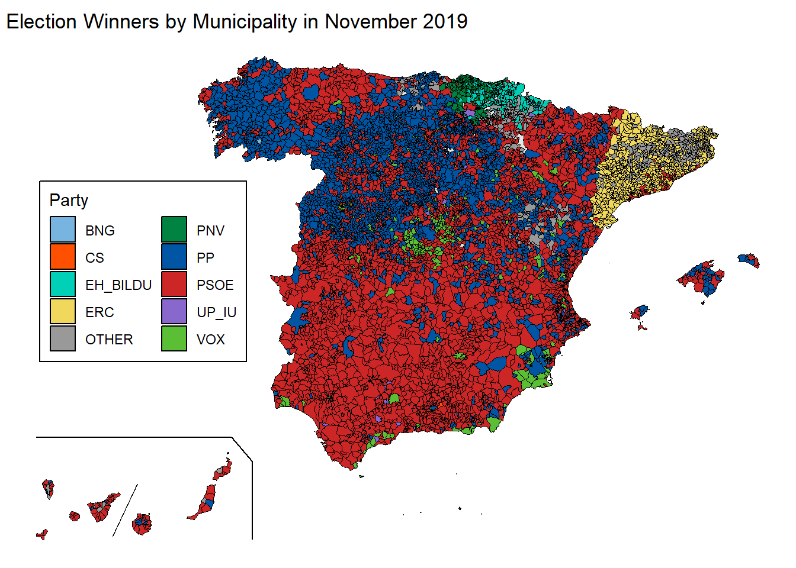
All elections since 2008
Now, a plot mapping the winners in all municiaplities in all elections since 2008 is shown by using a facet wrap.
election_winners <-
election_data_clean |>
dplyr::select(-mes, -vuelta,-participacion_1, -participacion_2, -votos_nulos) |>
drop_na(votes) |>
mutate(municipio_id = paste(codigo_provincia, codigo_municipio, sep = "-")) |>
group_by(date_elec, municipio_id) |>
mutate(vote_share = (votes / (votos_candidaturas + votos_blancos))*100) |>
ungroup() |>
dplyr::slice_max(n = 1, vote_share, by = c(municipio_id, date_elec)) |>
dplyr::select(municipio_id, vote_share, party_collect, party, anno, date_elec)
elec_winners_all_time <- munic |>
left_join(election_winners, by = c("municipio_id" = "municipio_id"))election_names <-
as_labeller(c(
'2008-03-01'="March 2008",
'2011-11-01'="November 2011",
'2015-12-01'="December 2015",
'2016-06-01'="June 2016",
'2019-04-01'="April 2019",
'2019-11-01'="November 2019"
))
ggplot(esp_can) +
geom_sf() +
geom_sf(data = can_prov) +
geom_sf(data = can_box) +
geom_sf(data = elec_winners_all_time, aes(fill = party_collect), color = "black", size = 1) +
scale_fill_manual(name = "Party", values = party_colors) +
theme_void() +
labs(title =" Election Winners by Municipality since 2008") +
theme(legend.position = "bottom",
legend.margin = margin(6, 6, 6, 6))+
guides(fill = guide_legend(nrow = 1)) +
coord_sf() +
facet_wrap(~date_elec, labeller = as_labeller(election_names))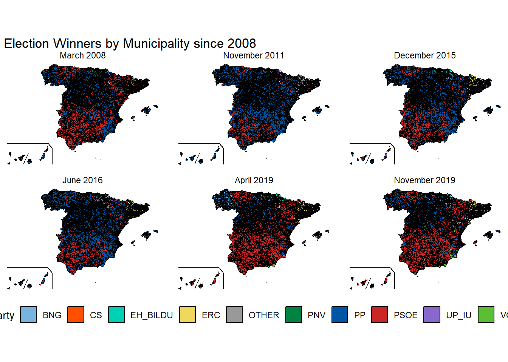
The 2019 Elections
Finally, we return to the two elections in 2019 to see how the short amount of time in between elections influenced the results across municipalities.
election_winners_2019 <-
election_data_clean |>
filter(anno == "2019")|>
dplyr::select(-mes, -vuelta,-participacion_1, -participacion_2, -votos_nulos) |>
drop_na(votes) |>
mutate(municipio_id = paste(codigo_provincia, codigo_municipio, sep = "-")) |>
group_by(date_elec, municipio_id) |>
mutate(vote_share = (votes / (votos_candidaturas + votos_blancos))*100) |>
ungroup() |>
dplyr::slice_max(n = 1, vote_share, by = c(municipio_id, date_elec)) |>
dplyr::select(municipio_id, vote_share, party_collect, party, anno, date_elec)
elec_winners_2019 <-
munic |>
left_join(election_winners_2019, by = c("municipio_id" = "municipio_id"))
election_names <- as_labeller(c(
'2019-04-01'="April 2019",
'2019-11-01'="November 2019"
))
ggplot(esp_can) +
geom_sf() +
geom_sf(data = can_prov) +
geom_sf(data = can_box) +
geom_sf(data = elec_winners_2019, aes(fill = party_collect), color = "black", size = 1) +
scale_fill_manual(name = "Party", values = party_colors) +
theme_void() +
labs(title =" Election Winners by Municipality in 2019 elections") +
theme(legend.position = "bottom",
legend.margin = margin(6, 6, 6, 6),
legend.justification = "center")+
guides(fill = guide_legend(nrow = 1)) +
coord_sf() +
facet_wrap(~date_elec, labeller = as_labeller(election_names))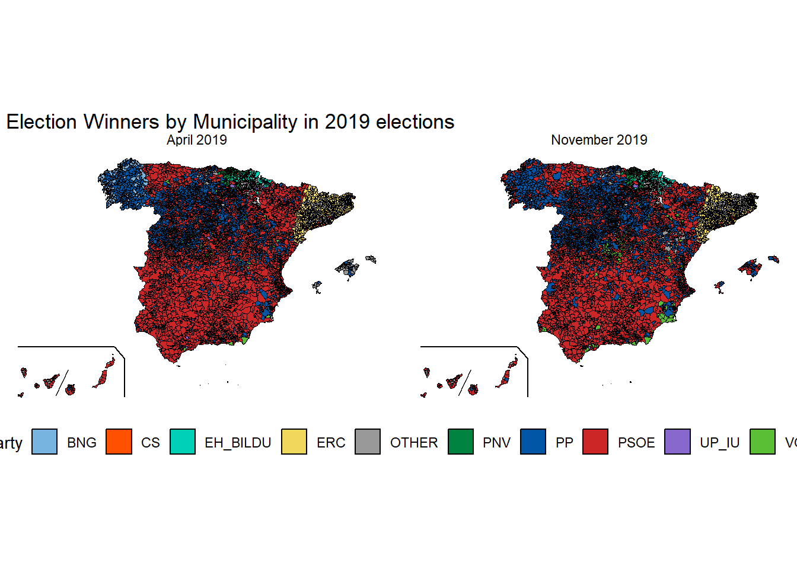
From a two-party system to a multi-party system
In this section, we show the change of the Spanish party system, from a system dominated by two parties to a multi-party system. We show this by creating a slopegraph, indicating the vote share of every major party in every election since 2008.
election_data_mika <-
election_data_clean |>
select(c(party_collect, votes, date_elec))
election_data_mika$party_collect<-
factor(election_data_mika$party_collect)
election_data_mika<- election_data_mika |>
group_by(date_elec) |>
mutate(TOTALvotos_poreleccion = sum(votes))|>
ungroup()|>
summarise(votos_partidos = sum(votes),
.by = c(party_collect,
date_elec,
TOTALvotos_poreleccion)) |>
na.omit()
election_data_mika<- election_data_mika |>
mutate("vote_share" = round( votos_partidos/TOTALvotos_poreleccion*100, 2))
election_data_mika <- election_data_mika |>
mutate(convocatorias = format_ISO8601(date_elec,
precision = "ym"))newggslopegraph(dataframe = election_data_mika,
Times = convocatorias,
Measurement = vote_share,
Grouping = party_collect,
Title = "Vote Distribution",
SubTitle = "Percentage share of votes per party for elections from 2008 to 2019",
LineColor = party_colors)
You gave me 12 colors I'm recycling colors because you have 13 party_collects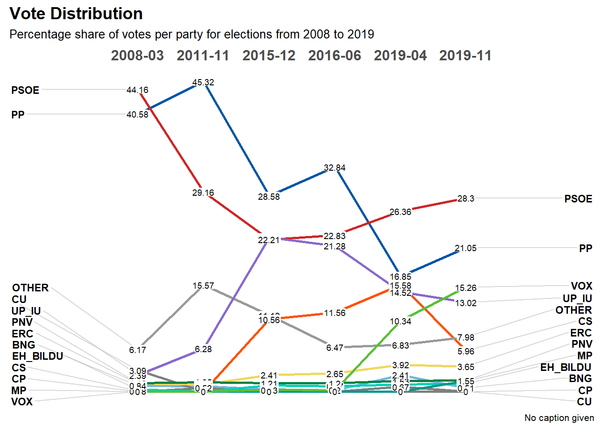
Who uses which polling provider?
With our final question we wanted to know which media outlet uses which polling station. To visualize this, we create a network pitting collaborators visually against each other.
survey_data_mika <- survey_clean |>
distinct(date_elec, pollster, media) |>
select(-date_elec)
network<- graph_from_data_frame(survey_data_mika, directed = F)Warning in graph_from_data_frame(survey_data_mika, directed = F): In `d' `NA'
elements were replaced with string "NA"deg <- degree(network, mode="all")
plot(network,
main="Pollster & Media network",
layout= layout_nicely,
vertex.size=deg*9,
vertex.label.color = "black",
vertex.label.cex = 0.6,
vertex.label.degree = -pi/2,
edge.arrow.size = 0,
edge.arrow.width = 0,
edge.color = "black")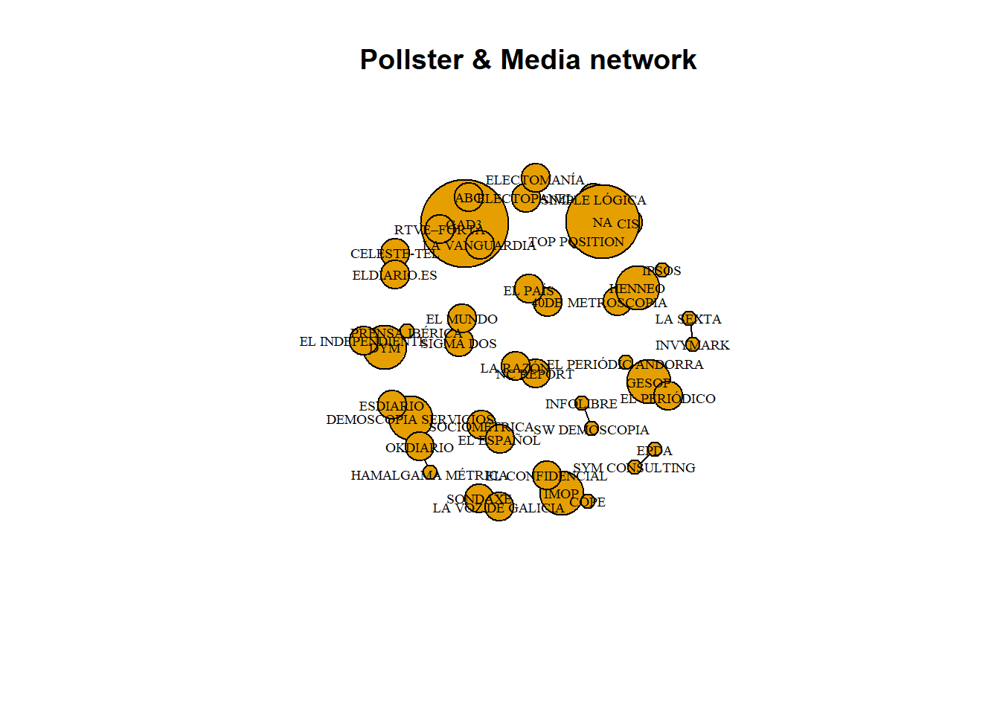